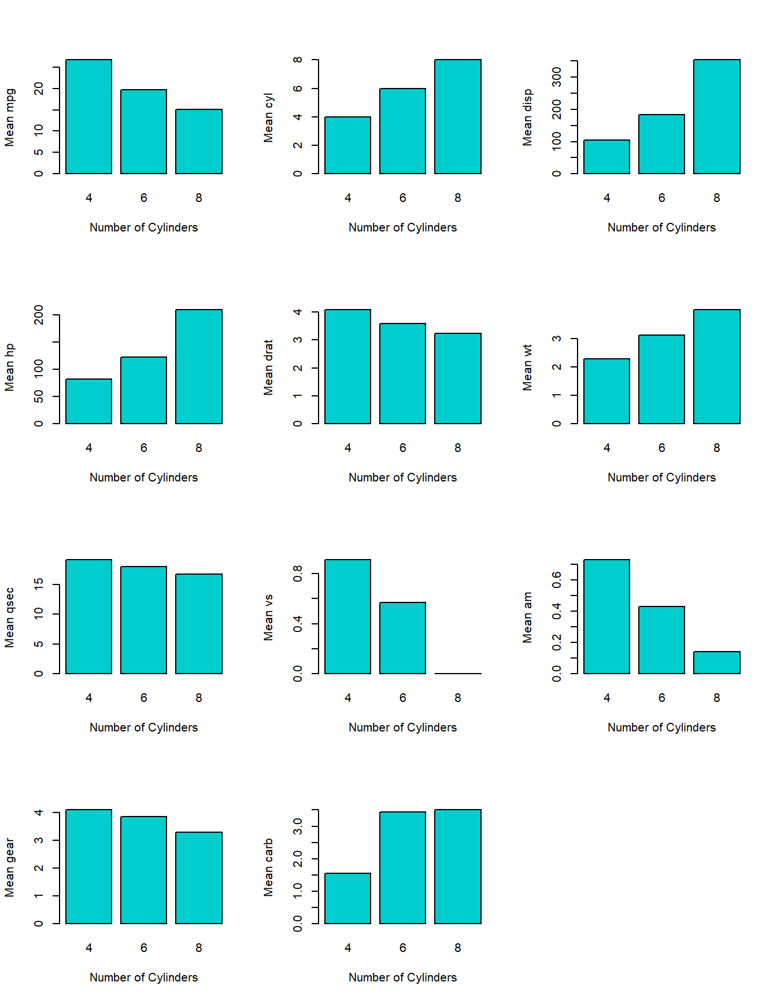

12 telecast()
Map()/mapply() from Base R executes functions pairwise when given multiple data objects, as do map2()/pmap() from purrr. While beneficial in their own right, said functions cannot concisely map over datasets independently of each other, which would be useful for storing disparate information into a single list.
Inspired by broadcast() from Julia11, telecast() essentially wraps mapply() within lapply() to achieve this outcome.
The two required functions are f and l, respectively a function and list. The third parameter as.vector, which is optional, converts the output to a vector if set to TRUE (and thus will resemble the output from rapply()); by default, it is FALSE for a list format.
12.0.1 Iterative Means
# GOAL: Obtain the means for each column in 3 datasets.
### Create a list of 3 datasets independent of each other.
l <- list(mc = mtcars, aq = airquality, lcs = LifeCycleSavings)
### Create a function that removes missing values from calculating the average.
mean.nr <- function(x) mean(x, na.rm = TRUE) # airquality has NA values.
### Get the means for every column column in each dataset.
output1 <- telecast(mean.nr, l)
output1 # Compare: lapply(l, function(x) mapply(mean.nr, x))## $mc
## mpg cyl disp hp drat wt qsec
## 20.090625 6.187500 230.721875 146.687500 3.596563 3.217250 17.848750
## vs am gear carb
## 0.437500 0.406250 3.687500 2.812500
##
## $aq
## Ozone Solar.R Wind Temp Month Day
## 42.129310 185.931507 9.957516 77.882353 6.993464 15.803922
##
## $lcs
## sr pop15 pop75 dpi ddpi
## 9.6710 35.0896 2.2930 1106.7584 3.757612.1 chain()
The function chain() is a simplification of telecast(): the output is a matrix via sapply().
12.1.1 Chaining Means into a Bar Plot
# GOAL 1: Get means for every column in mtcars by cylinder.
l <- split(mtcars, mtcars$cyl)
output <- chain(mean, l)
output## mpg cyl disp hp drat wt qsec vs
## 4 26.66364 4 105.1364 82.63636 4.070909 2.285727 19.13727 0.9090909
## 6 19.74286 6 183.3143 122.28571 3.585714 3.117143 17.97714 0.5714286
## 8 15.10000 8 353.1000 209.21429 3.229286 3.999214 16.77214 0.0000000
## am gear carb
## 4 0.7272727 4.090909 1.545455
## 6 0.4285714 3.857143 3.428571
## 8 0.1428571 3.285714 3.500000## [1] TRUE# GOAL 2: Plot the means
par (mfrow = c(4, 3))
for (i in 1:NCOL(output)) {
barplot(output[, i],
col = 'cyan3',
xlab = 'Number of Cylinders',
ylab = paste('Mean', colnames(output)[i]))
}